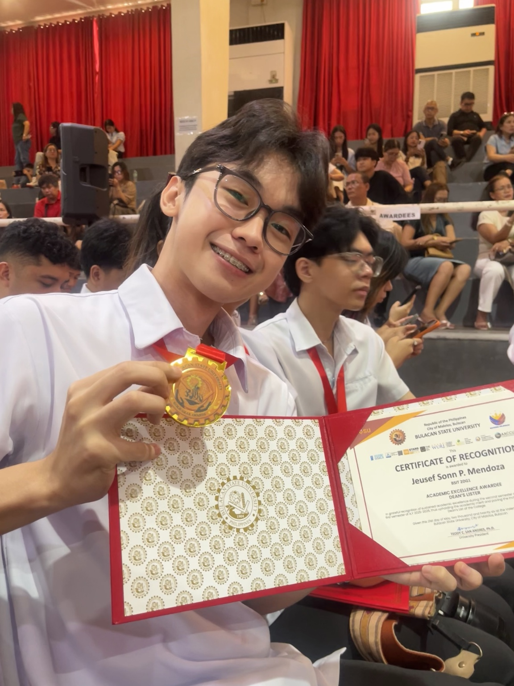

WEB APPLICATION · STUDENT PROJECT
BulSU VoteSecure
A student voting system with election browsing, vote casting, voting history, and live results.
IT STUDENT & ASPIRING DEVELOPER
Hi, I’m Jeusef Sonn P. Mendoza. I’m an Information Technology student at Bulacan State University, learning by building practical web and software projects.
Malolos, Bulacan, Philippines

01 / ABOUT ME
I’m Jeusef Sonn P. Mendoza, a BS Information Technology student at Bulacan State University. I enjoy turning ideas into applications and understanding how the pieces work together—from the interface to the database.
My coursework and personal practice span PHP and MySQL web applications, Java programs, and Flutter interfaces. I bring a hardworking, disciplined approach to learning, with an interest in readable code and clear user experiences.
02 / SELECTED WORK
A selection of student projects.
Built to learn. Designed to be useful.
A student voting system with election browsing, vote casting, voting history, and live results.
A console program that calculates tuition based on scholarships, installment plans, discounts, and interest.
A Flutter interface exercise exploring navigation, stateful widgets, and a consistent orange-and-beige visual theme.
03 / MY TOOLKIT
Skills developed through coursework
and hands-on project practice.
HTML & CSS · JavaScript
PHP · MySQL · Bootstrap
Java · Java Swing
Flutter · Dart
Git · VS Code · NetBeans
XAMPP · Cisco Packet Tracer